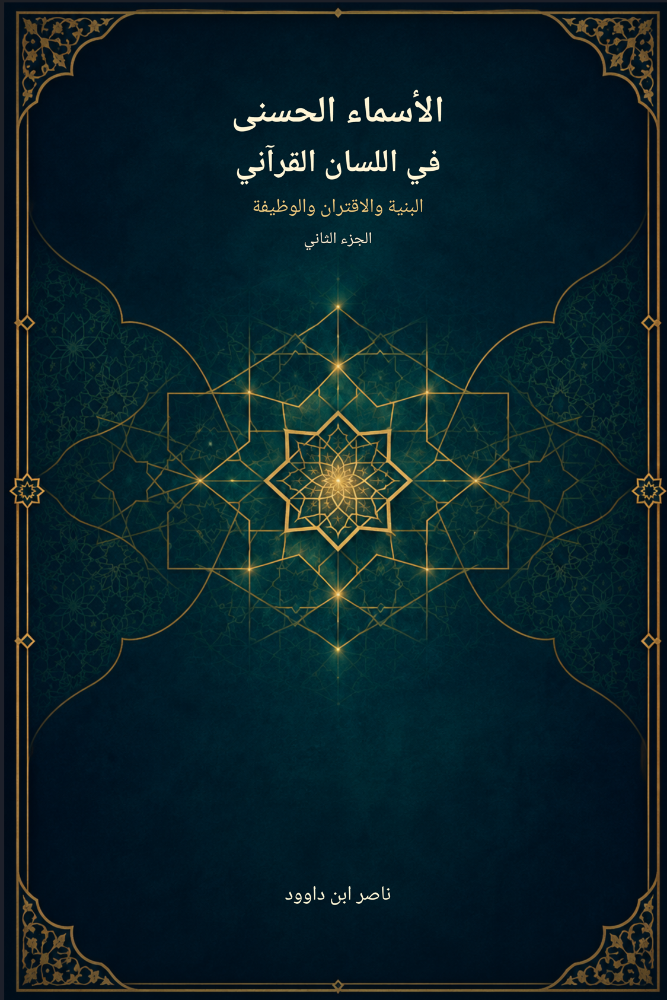

134. الأسماء الحسنى في اللسان القرآني — الجزء الثاني

بحث مرحلي في البنية والاقتران والوظيفة، يميز النص والبيان والاستنباط والفرضية والنموذج التشغيلي، دون ادعاء اكتمال الحصر أو التحقيق.
النسخة الإنجليزية تكييف مفاهيمي مختصر؛ يبقى النص العربي المرجع الأساسي. النص القابل للبحث مستخرج من Word؛ راجع الأصل للجداول والصور والتنسيق. PDF غير متاح بعد. يصف الكتاب حصيلة مرحلية، ولا يعلن اكتمال الحصر الشامل أو مطابقة جميع الإحالات.
قراءة PDF داخل الموقع / Read the PDF on this website
جارٍ تجهيز القارئ… / Preparing the reader…